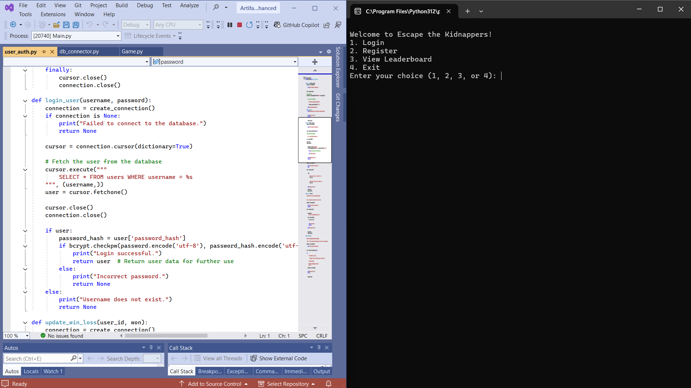

Professional Self-Assessment
Introduction
I first enrolled at Southern New Hampshire University (SNHU) in the fall of 2020 after previously stepping away from college twice due to the challenges of balancing work, in-person courses, and life in general. SNHU's online computer science program provided me with the opportunity to pursue a college degree without making any major sacrifices on any other obligation. Over the past few years, I have gained more knowledge than I initially expected, and I have found a career that I truly enjoy. The computer science program covered many different topics, starting with the fundamental programming best practices all the way to advanced subjects like machine learning and artificial intelligence. I was also able to work with multiple programming languages, such as Python, C++, Java, and CSS. Completing my ePortfolio as part of my final course at SNHU is the culmination of a goal that once seemed so far away, and now that it is almost over, it feels both surreal and extremely rewarding.
I believe the computer science program at SNHU is structured to better simulate real-world scenarios, which allows students to demonstrate their skills and strengths much more effectively. The coursework was not just about coding assignments but involved full-fledged projects that simulated professional environments. This approach has been instrumental in shaping my professional goals and values and has prepared me to enter the computer science field or any other field with much more confidence.
Collaborating in a Team Environment and Communicating with Stakeholders
Many of the computer science program courses relied on scenarios to emulate collaboration in a team environment. Personally, I did not have courses involving real-world collaboration beyond the basic discussion posts. In light of this, by combining the given scenarios with my work experience in technical team settings, I was able to further refine my collaboration skills. For example, I was a part of a team that performed laboratory testing for oil field companies. These tests could run for many days and collaboration was essential for meeting requirements and gathering accurate data. Similarly to collaboration, the courses provided scripts and scenarios to simulate stakeholder communication. The course work always highlighted the importance of conveying and gathering technical information clearly and effectively. Based on experience communicating with stakeholders on various work projects and across different jobs, I was able to actually apply these lessons in a real-world setting. One example of this was when I was tasked with presenting a series of test results to a major client and their partners. I had to take highly technical information and arrange it in a way that allowed the presentation to be understood by individuals with different levels of technical knowledge.
The blending of my professional experience with the various scenarios presented in the courses reinforced the significance of efficient collaboration and communication while polishing the skills and abilities I had already started to develop. The computer science program highlighted how these abilities contribute to project success, preparing me to work efficiently in team environments and communicate accurately with stakeholders in my future career.
Data Structures and Algorithms
Throughout my time at SNHU, particularly in CS-300 Data Structures and Algorithms: Analysis and Design, I developed strong analytical and problem-solving skills in data structures and algorithms. I became capable of working with vectors, hash tables, and trees to design solutions to complex problems. For example, for the final project of this course, I was tasked with creating an advising assistant program for students to view courses and their prerequisites, I used complex data structures and advanced algorithmic designs to meet all client requirements. This experience also enhanced my ability to perform run-time analyses and select optimal algorithms, which ensures that software applications operate efficiently and effectively.
Software Engineering, Database, and Security
I have gained skills in software engineering, database management, and security throughout the computer science program, specifically in courses like CS-360 Mobile Architecture and Programming. For instance, I developed a mobile application, from the ground up, that allows users to register, login, set a goal weight, and add daily weights. In this project, I employed secure database practices to securely store user data. I employed bcrypt for password hashing to safeguard user data and developed secure query techniques through parameterized queries and user input validation to help prevent any SQL injection attacks. I concentrated on preserving user privacy by only requesting permissions that are needed for the application to function as it should. For this project, the user has the ability to refuse the request, and I only require permission for SMS messaging. This stops inappropriate access to user device functions including camera and audio. This demonstrates my ability to integrate essential security measures throughout the development process, which resulted in a user-friendly applications that prioritize both functionality and the protection of user data.
Preparation for the Industry
Finishing the courses in the computer science program and creating my ePortfolio has greatly enhanced my employability within the computer science field. The experience gained from the real-world mimicking projects has prepared me to tackle the issues of this field effectively. Managing online coursework alongside personal obligations has significantly improved my time management and self-discipline, which are traits that are essential for any working environment. My ePortfolio not only demonstrates my technical skills and abilities but also illustrates my journey of growth, perseverance, and commitment to lifelong learning.
Artifacts and Portfolio Integration
The artifacts in my ePortfolio collectively demonstrate a wide range of skills and abilities across three core categories: software design and engineering, algorithms and data structures, and databases with a focus on security.
- Artifact One: The first artifact shows my skills and abilities in software design and engineering. I transformed a basic script into an intricate text-based game by enhancing its complexity to demonstrate software design and engineering skills. This project required a complete refactoring and the addition of new features, which accurately shows my ability to expand a project's scope and functionality in a way that greatly improves every aspect of an existing project.
- Artifact Two: The second artifact demonstrates my proficiency in algorithms and data structures. By enhancing an Android application that allows users to set and track personal weight goals, I implemented a singleton pattern to keep data access consistent and incorporated caching to reduce database queries, which improves the application's efficiency by storing frequently accessed data.
- Artifact Three: The third artifact highlights my skills in database integration and security. Building upon the first artifact, I integrated a MySQL database to manage user information securely, including usernames, hashed passwords, and win/loss statistics. I used bcrypt for password hashing in order to reinforce the application's security. I also used safe query practices by using parameterized queries and validating user inputs. Additional features like a leaderboard and difficulty levels were added to enhance user engagement and to demonstrate my ability to implement complex functionalities.
Code Review Video
This video provides an overview of the original functionality of the artifact, code analysis, and the planned enhancements to demonstrate my growth in software design and engineering, algorithms and data structures, and databases.
Watch Code Review VideoArtifacts
Artifact 1: Software Design and Engineering

Description: The first artifact is a text-based game, written in Python, named “Escape the Kidnappers.” In its original form, it was a simple script and was the first coding project I ever completed at Southern New Hampshire University (SNHU). The original was created in early 2021 and consisted of pretty straightforward gameplay. The player could move to different rooms, collect items, and try to escape the kidnappers by collecting all six items.
Original Creation Date: Created in 2021 for my IT-140 Introduction to Scripting course.
Link to original and enhanced .zip files:
Narrative
The game was straightforward and poorly developed, which is partially why I chose it as my first artifact. I selected this artifact for my ePortfolio because it provided an excellent opportunity to show my growth in software design and engineering. Transforming the simple script into a much more sophisticated application perfectly demonstrates growth in this area.
I refactored the original code to take on a more object-oriented design by creating classes such as Player and Game. This major enhancement demonstrates my ability to use fundamental software engineering principles that help create modular, maintainable, and scalable code. Upon completing the code refactoring, I began the enhancement of game mechanics by incorporating new features such as combat, health management, enemy encounters, and item utilization. I enhanced the artifact's architecture by segmenting the code into several modules. This massively enhances maintainability and readability, which makes the artifact much more manageable for me or other developers to improve on in the future.
I made improvements like more descriptive instructions, a help command that displays the instructions, and clear feedback on user inputs in order to make the game more user-friendly. These enhancements improve how the game handles bad user inputs and assist the player throughout their game. I also worked on the documentation and error handling, in the artifact, by adding more frequent, detailed comments, exception handling, and input validation. This not only makes the game easy to play but also better organized and much easier to expand in the future. These important enhancements properly demonstrate my ability to design software with a focus on user experience and develop high-quality code that benefits users and future developers.
The Escape the Kidnappers artifact was enhanced in many different areas that all play a role in its success. First, the game world was expanded by introducing more rooms, items, and enemies. This made the game much more immersive and enjoyable for players. The game world expansion led to multiple possible endings, which greatly boosts the game’s replay value by offering different endings instead of just a survive or die ending that the original had. Second, new features like combat, health management, item usage, and enemy encounters were introduced and added depth and much needed strategy to the gameplay. Third, the code was restructured using object-oriented principles, which improved its organization and made it easier to maintain and build upon. Fourth, better instructions, functionality, and feedback were implemented to help players understand the game more easily. Finally, enhancements dealing with input validation and error handling made the game much more stable and user-friendly by sending a message to the user rather than creating an error and closing the game.
Through the enhancements made on this artifact, I was able to meet a few different course outcomes, particularly focusing on outcomes one, three, and four. These are the course outcomes that I originally planned on achieving through this artifact. I set a solid foundation for a collaborative environment by organizing the code in a modular way with clear and descriptive documentation. The code is much easier to understand, contribute to, and build upon as a result of these enhancement, which are key for creating collaborative environments that are accessible to a diverse audience. I accomplished course outcome three through the enhancements involved in designing algorithms for a basic combat system, health management, and item interaction. I selected appropriate data structures such as dictionaries for the rooms and items, and lists for inventory management which balances efficiency and complexity in a way that aligns with computer science practices and principles. Outcome four was met by applying object-oriented design, code modular organization, and other software engineering best practices. I have created a much more robust and scalable application by implementing these techniques and practices.
I made more progress toward course outcome two, even though course outcomes one, three, and four received the majority of my focus. This was accomplished by improving the help command, input feedback, and game instructions. By making instructions more understandable and easier to grasp, these player-specific enhancements improved communication between the player and the game. Throughout the code, there are useful comments which demonstrate high-quality writing communication that is tailored for a different audience. The original course outcome coverage plan is still in place, and I intend to improve on the following artifact in order to make further progress in each course outcome.
The entire process of enhancing this artifact was very gratifying. Enhancing this artifact is something that I have wanted to do for a long time now, and finally, being able to do it felt very rewarding. It has been a long time since I worked on a coding project where I enjoyed what I was doing, and I believe that shows in all the enhancements that were made to this artifact. I included more complexity than what I had initially planned due to me just having fun with the coding process. I learned that I do enjoy developing code when it is something that I am interested in. At the start of this course, I ultimately believed I had lost all interest in coding, but this artifact enhancement milestone sparked my interest again.
I faced a few different challenges with this artifact. The first was a function to clear the gameplay screen of all previous input prompts. I created a clear_screen() method, and I could not get it to function correctly. I ultimately decided to omit that feature and decided to clean up the output with spacing and separator lines. I also had a difficult time creating the basic combat and health systems. I went through five different versions before I finally felt good about their functionality. Overall, I was very rusty and relied on a lot of trial and error and research, but I really enjoyed enhancing this artifact.
Artifact 2: Algorithms and Data Structures

Description: The second artifact is an Android application I developed in my CS 360 Mobile Architecture and Programming course that tracks a user's weight. The app allows users to register, log in, set a goal weight, record their daily weights, and receive an SMS notification when they reach their goal weight. The app uses an SQLite database to store all user details within three separate tables.
Original Creation Date: Created in 2023 for my CS-360 Mobile Architecture and Programming course.
Link to original and enhanced .zip files:
Narrative
I selected this artifact for my ePortfolio because it provided an excellent opportunity to demonstrate my ability in software design patterns and data management techniques in a real-world context. Additionally, the enhancements made to this artifact accurately show my abilities in algorithms and data structures.
First, I refactored the DatabaseActivity class to implement a singleton pattern which increases efficient resource usage and dramatically improves data access consistency throughout the application. This enhancement also reduces the risk of data inconsistencies and avoids multiple database connections, which improves performance. The refactoring was followed by including a cache inside the singleton to store frequently accessed data such as user IDs, usernames, and goal weight. This was the original enhancement that I planned on making but ran into challenges that led to additional enhancements. This enhancement demonstrates my understanding of data structures such as hash maps, hash sets, and algorithms that aid in data retrieval optimization. The final enhancement I completed in this artifact was ensuring that all the other activities used the shared singleton instance. This allows the application to maintain a consistent database state and cached data.
The enhancement performed on this artifact improved it in many ways. The enhancements optimize the application's performance by reducing the numerous redundant database queries by caching the frequently accessed user data, which made the app more responsive and efficient. The improvements also increase code maintainability and scalability. This was accomplished by applying well-founded design patterns and data structures and by refactoring the code with industry best practices in mind. By allowing the code to be more flexible and better suited to scale with potential new features, the improvements enhanced the current capability of the application and laid a solid foundation for future development.
Through the enhancements made in artifact two, I have achieved course outcomes three and four. These are the two course outcomes that I had initially planned to achieve in the outcome-coverage plan. By refactoring the DatabaseActivity class to implement a singleton pattern and a caching mechanism, I applied algorithmic principles to solve the problem that was inefficient and inconsistent database access, which covers outcome three. Outcome four was achieved by utilizing well-founded design patterns and data structures that enhance the artifact's efficiency and functionality while simultaneously improving user experience by enhancing the apps performance. The outcome-coverage plan remains unchanged. I have achieved the first four course outcomes through the enhancements to the first two artifacts and the additional code review. The final course outcome will be achieved through the enhancements made to the final artifact.
Throughout the process of researching potential enhancements and implementing them, I learned many different things. I learned a lot about the importance of cache and how it can optimize data retrieval and reduce the number of unnecessary database interactions. I was also able to refresh the database knowledge that I had lost from lack of use. I learned how a singleton pattern could improve my application by increasing performance and data consistency. I learned new debugging skills that allowed me to confirm that the implemented enhancements were working correctly. The main issue that I ran into regarding this artifact was the multiple instances of the database helper, which was causing inconsistencies in the cache. After researching the issue, I realized that I needed to implement a singleton pattern so that all the different activities used the single singleton instance. The first few implementations broke some of the existing features, which took some tweaking to figure out, but it was minor compared to the first challenge. In summary, I gained a lot knowledge, and I was able to reclaim information that I had not utilized for a long time. I faced numerous challenges, nevertheless it was an enjoyable and rewarding experience.
Artifact 3: Databases
Description: The third artifact is a further enhancement of the "Escape the Kidnappers" game to demonstrate my skills in databases. I integrated a MySQL database to handle user information such as usernames, hashed passwords, and win/loss statistics. I also implemented password hashing using bcrypt and added features like a leaderboard and difficulty levels.
Original Creation Date: Created in 2024 as the first artifact on my CS-499 Computer Science Capstone course.
Link to original and enhanced .zip files:
Narrative
I chose this artifact for my ePortfolio because it provided an excellent opportunity to showcase my skills and ability in databases, which is the third and final category of the ePortfolio final submission. I originally planned to use this artifact because it was the first coding project I completed at SNHU. I thought it would be interesting to finish my college career on the first college coding project that I ever submitted. I enhanced the original for artifact one and further enhanced it for artifact three to demonstrate my ability to integrate databases and improve security. The specific components that showcase my skills and abilities are MySQL database implementation, password hashing, and advanced game features.
I was able to complete numerous enhancements on this artifact. The primary enhancement, which supports the database category, is the integration of a MySQL database. The database was created to handle user information such as usernames, hashed passwords, and win/loss statistics. In addition to the database, I developed a system that enables user registration and login, securely manages their credentials, and authenticates the player’s identification prior to gameplay. I used bcrypt hashing to hash user passwords, which boosts the game's security and protect user information from potential threats. I also incorporated a feature that allows users to monitor their win/loss record, which allows them to monitor their progress across many games over time. Alongside the win/loss functionality, I introduced a leaderboard that ranks players according to their win/loss percentage. This promotes an environment of competition and enhances the game's replay value. The last significant enhancement I completed on this artifact is the inclusion of various difficulty levels that a user can select to play. I created difficulty settings for easy, medium, and hard that influence both enemy and user health. This adds depth to an otherwise basic game. The remaining small enhancements aimed to improve game quality and function while minimizing vagueness, especially with the clarification of family member rescue.
In the original course outcome coverage plan, I planned to meet course outcomes three, four, and five through the enhancements made to this artifact. Course outcome three is demonstrated through the integration of the database and the use of prepared statements, which showcases the ability to design and evaluate computing solutions for secure player data management while balancing security, efficiency, and user experience. Outcome four is reflected in the use of MySQL for database management and bcrypt for password hashing, applying well-founded techniques to create a secure system that allows players to log in, store progress, and retrieve it, meeting industry goals of scalability and security. Outcome five is demonstrated by implementing password hashing and secure login practices to protect the game's players from adversarial exploits, ensuring privacy and enhanced security in the system's architecture. With the completion of artifact three, I have finally achieved all of the course outcomes without changing the original outcome-coverage plan defined in the first week of the capstone course.
While reflecting on the enhancement process for this artifact, I realized that I had gained and learned a lot. First, I actually gained hands-on database experience by setting up and working with a MySQL database. I had never worked with MySQL before this artifact, but it was a simple and fun process when done correctly. Second, from researching security, I learned the importance of password management and deepened my understanding of the importance of securing user data . Third, I enhanced my overall ability in Python by using additional libraries such as mysql.connector and bcrypt to implement advanced programming concepts that I had not worked with before this enhancement. At last, I observed the significance of user experience and its impact on player engagement and enjoyment. I let my family take part in each iteration of the game, and their enjoyment grew with every change and enhancement. In the end, my family was competing for the highest position on the leaderboard, trading the laptop to take turns playing the game.
I faced a few different challenges during the enhancement process to artifact three. The first challenge that I had to deal with was due to the version of Python that I was using was too old. I uninstalled the old version and installed the newest Python version, which resulted in over 40 errors, and had to change a lot of the code so that the game would work again with the new version. The next challenge that I dealt with was confirming that the database connection was reliable and that it handled exceptions properly. The last challenge I faced involved how to manage sensitive data carefully, given that the artifact will be public. I overcame these challenges through hours of research, videos, and testing. I enhanced the artifact piece by piece and carefully tested the functionality before proceeding with the enhancement plan. I read a lot of documentation and community forum posts regarding the challenges that I was having and eventually everything came together. This artifact was the most difficult for me to complete but it was also the most rewarding to see completed.
Contact Me
If you would like to discuss my work, you can reach me at brandon.stallons@snhu.edu.